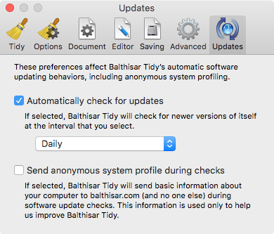

Updates
The Updates Preferences panel helps you control if and when automatic software update checks are performed, as well as allows you to control what sort of statistical information that Balthisar Tidy sends when it performs a check for updates.

Balthisar Tidy is able to update itself to new versions directly from balthisar.com, if you allow it.
Additionally Balthisar Tidy requests your permission to collect anonymous system information during update checks. This information is used to help balthisar.com target its development resources. The information is truly anonymous and you can read about what is collected here.